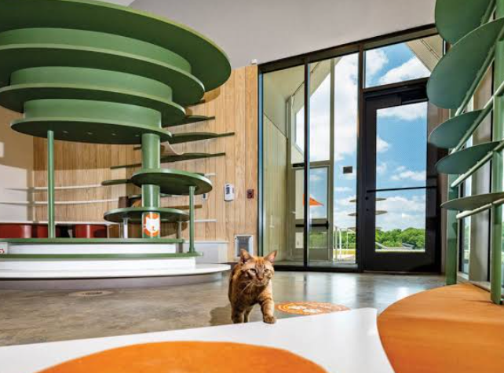

About This Website
This website exists to introduce visitors to Pixel Paws Animal Shelter, a fictional non-profit organization dedicated to rescuing, sheltering, and rehoming abandoned and stray animals. The purpose of this site is to share our story, explain the programs we offer, and make it easy for the community to get in touch, adopt an animal, or volunteer their time.
We were founded by a small group of local animal lovers, and we have grown into a full-service shelter with a veterinary partnership, a foster network, and community outreach programs.
Adopting my dog Biscuit from Pixel Paws was the best decision my family ever made. The staff genuinely cared about finding the right match for us.
Our Mission Statement
To reduce the number of homeless animals in our community through rescue, rehabilitation, education, and adoption, while treating every animal with dignity and compassion.
